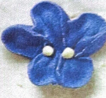

← Volver al módulo 5

Violetas
Flor delicada realizada con glasé real en tonos violeta y blanco, perfecta para decoración fina en repostería.
Ingredientes
- Glasé real:
- 1 clara de huevo
- 1 cucharada de jugo de limón
- 2 a 3 tazas de azúcar impalpable
- Colorante en gel violeta
- Armado de la flor:
- Boquilla 102
- Boquilla 2
- Mangas
- Acople
- Clavo Nº 7
- Cuadraditos de papel aluminio 7x7 cm
Preparación
Mise en place. Preparar el glasé real con clara de huevo, azúcar y jugo de limón.
Separar el glasé en dos partes; teñir la parte mayor de violeta y la menor dejarla blanca.
Cargar las mangas con acople y boquillas correspondientes.
Con boquilla 102 y glasé violeta, formar 3 pétalos grandes y delgados y luego 2 pétalos más alargados y pequeños.
Cubrir el clavo con papel aluminio y trabajar en ángulo de 45°.
Con glasé blanco o amarillo y boquilla 2, hacer 2 puntos alrededor de la flor.
Dejar secar al aire libre de 1 a 2 días.